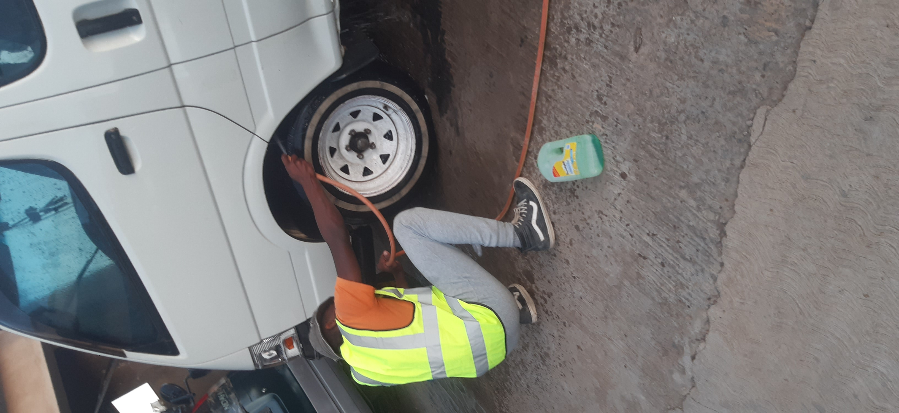
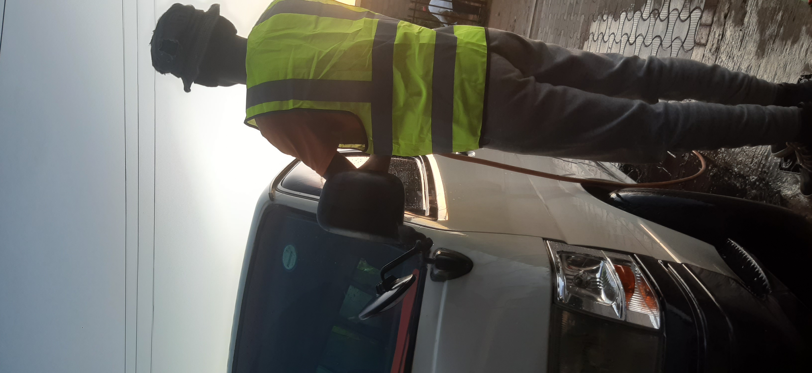

Our Services
At **Kasi Mobile Car Wash**, we specialize in providing top-quality car wash services that cater to the unique needs of drivers in Lesotho. From dusty mountain roads to the bustling streets of Maseru, we’ve got you covered!

Exterior Wash
We provide a deep-clean exterior wash that removes dirt and grime, perfect for cars driven on Lesotho’s dusty roads.

Interior Detailing
Restore your car’s interior with our thorough detailing, ideal for removing dust from road trips across Lesotho.

Waxing & Polishing
Protect your car’s paint and give it a showroom finish to withstand Lesotho’s weather conditions.